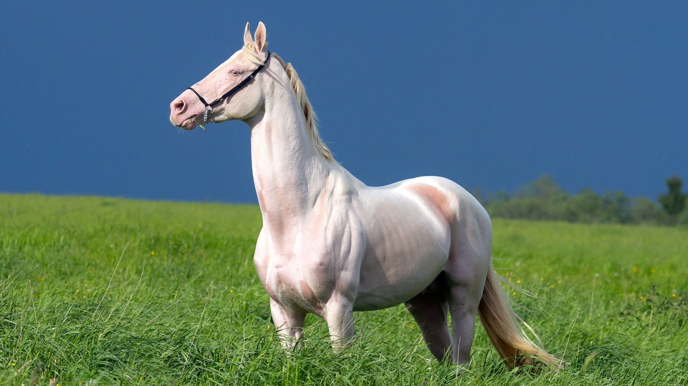

Horse
Large domesticated mammals used for riding, racing, and farm work.
- Species: Equus ferus caballus
- Diet: Herbivore
- Size: 4.5-6 ft tall
- Weight: 900-2,200 lbs
- Life span: 25-30 years
- Habitat: Stables, pastures
- Found: Worldwide
- Can be pet: Yes
Trivia: Horses can sleep standing up thanks to a specialized stay apparatus in their legs.